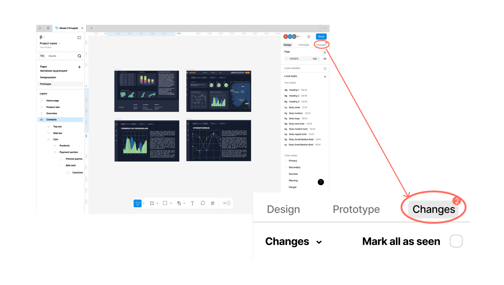
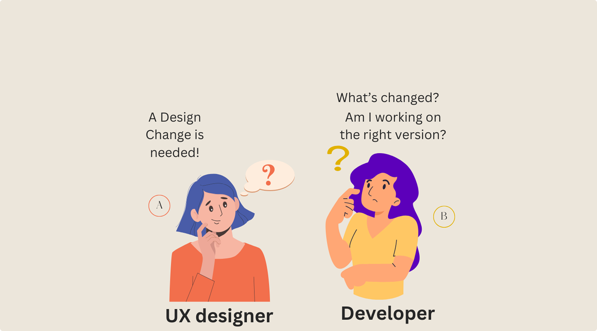
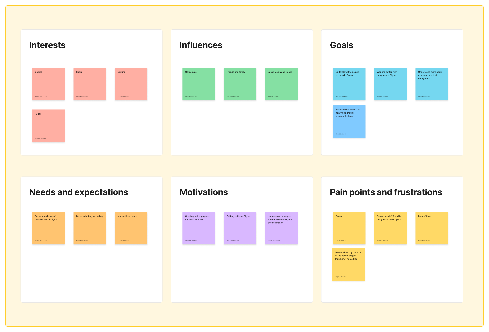
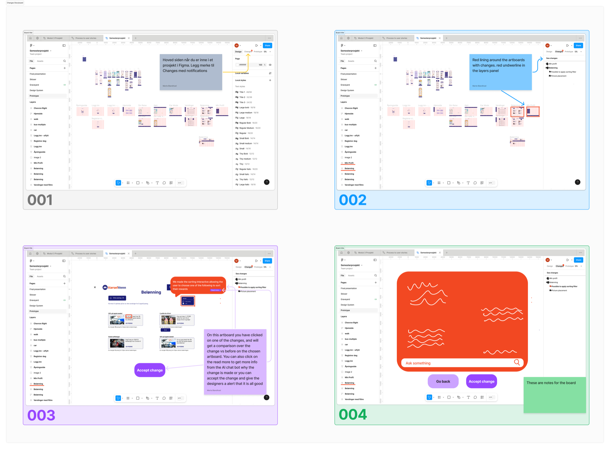
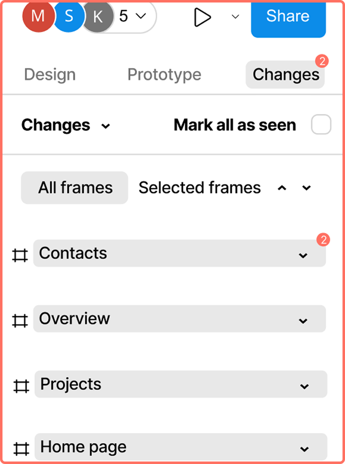
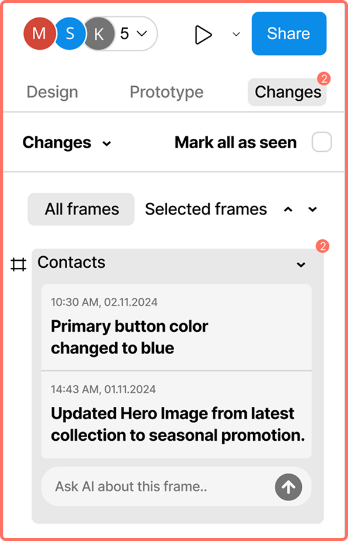

Change Watcher
Konsept for et nordisk konsulentselskap
- Min rolle
- Designer i prosjektgruppa
- Metoder
- Intervjuer, observasjon, tematisk analyse, designsprint, brukertest
- Verktøy
- Figma, Maze
Beskrivelse
En funksjon i Figma som gir utviklere en samlet oversikt over hva som er endret i designet, med en AI-assistent som kan forklare endringene.
Kontekst
Vi startet bredt, med hvordan et konsulentselskap kunne samarbeide bedre i tverrfaglige team. Feltarbeidet viste at det spørsmålet var for vidt, men at én del av samarbeidet skapte tydelig friksjon: overleveringen fra designere til utviklere. Det ble prosjektets fokus.

Utfordringen
Hvordan kan vi gjøre det enklere for utviklere å følge med på endringer i designet, slik at det som bygges faktisk blir det som ble designet?
Innsikt
Gjennom fem semistrukturerte intervjuer og observasjon i selskapet så vi at utviklere brukte mye tid på å finne ut hva som var endret i det de kalte «rotete» Figma-filer med mange rammer. Små endringer ble oversett eller misforstått, og både designere og utviklere brukte tid på å avklare detaljer i etterkant.
Konsekvensen var forsinkelser, og en implementering som ikke alltid speilet det designeren mente. Problemet var ikke at folk ikke snakket sammen, men at endringene var usynlige der utviklerne jobbet.

Prosess
Vi analyserte intervjuene tematisk og tok funnene inn i en designsprint. Der definerte vi problemet, laget en persona og skisserte ideer med Crazy 8s, før vi satte den beste ideen sammen i et storyboard.
Én tidlig beslutning formet resten: løsningen skulle ikke bli enda et verktøy teamet måtte ta i bruk. Den skulle ligge i Figma, der både designere og utviklere allerede jobbet. Deretter bygget vi en interaktiv prototype og testet den med 13 deltakere i Maze, med både oppgaver og spørsmål.


Løsningen
En egen fane for endringer
«Changes» ligger ved siden av Design og Prototype. Endringene vises kronologisk med tidspunkt og en kort beskrivelse, et merke viser hvor mange som ikke er sett, og listen kan filtreres på alle eller utvalgte rammer.
AI-assistent som forklarer
Under hver endring kan utvikleren spørre en AI-assistent om rammen og få tekniske detaljer, som fargekoder og justering, uten å måtte avbryte designeren.


Resultat
90 prosent av deltakerne syntes funksjonen var nyttig for tverrfaglige team, og 80 prosent løste oppgavene. Testen avdekket også forbedringspunkter i brukervennligheten, og at mye av det samme allerede finnes i Figmas Dev Mode.
Hva jeg tar med meg
Behovet var ekte, men vi burde undersøkt eksisterende løsninger grundigere før vi gikk i gang. Et videre arbeid måtte vise tydeligere hva Change Watcher tilfører utover Dev Mode. Samtidig lærte jeg mye om overleveringen mellom design og utvikling, og hvor mye det betyr at endringer er synlige der utviklerne faktisk jobber.